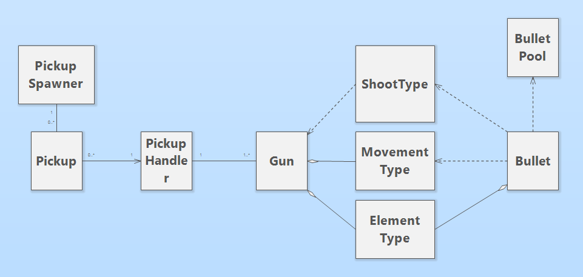
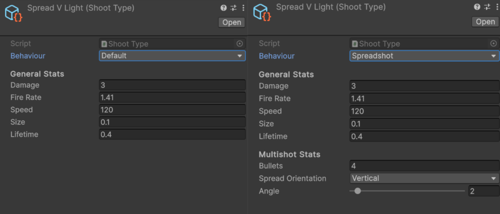

Modular Guns
A modular weapons system built through the aggregation of scriptable objects.
Overview
This is a modular weapons system I built for my programming class, with the intention of learning some more advanced system design. Every gun holds references to scriptable objects, which together define how it functions.
The system

Every gun holds 3 scriptable object references, which are the ShootType,
MoveType, and ElementType, all inheriting from
the EffectType base class. The shoot type determines a large number of variables, such as damage, spread,
fire rate, and number of bullets that are shot. The move type determines how those bullets move through space,
and the element type determines whether the bullets have a neutral, ice, or fire element.
There are a number of pickups that spawn in the world, and each one holds its own reference to
a single EffectType. Upon pickup, the PickupHandler parses the derived type
and injects it into the corresponding field on the currently equipped weapon.
Then, every time the gun fires, it injects its own references into the bullet, which the bullet
uses to determine its behaviour.
Custom editor scripts

While working on this project I learned about custom editor scripts, which are a way to control how your script is displayed on the Unity Editor. They are incredibly useful when building systems that designers will need to interact with, and can for example be used to show or hide fields based on certain conditions, such as the value of a boolean or enum.
public override void OnInspectorGUI() { serializedObject.Update(); ShootType instance = (ShootType)target; // Draw all properties as normal DrawDefaultInspector(); // Display conditional properties depending on type switch (_behaviourProp.enumValueIndex) { case (int)ShootType::ShootBehaviour.Spreadshot: EditorGUILayout.PropertyField(_bulletsProp); EditorGUILayout.PropertyField(_spreadOrientation); instance.maxAngle = instance.totalSpread / instance.bullets; // Custom slider for value, necessary for taking dynamic values for range _angleProp.floatValue = Mathf.Clamp(_angleProp.floatValue, 0f, instance.maxAngle); _angleProp.floatValue = EditorGUILayout.Slider( "Angle", _angleProp.floatValue, 0f, instance.maxAngle ); break; case (int)ShootType::ShootBehaviour.Grapeshot: EditorGUILayout.PropertyField(_bulletsProp); EditorGUILayout.PropertyField(_spreadProp); break; } // Apply any changes made in inspector serializedObject.ApplyModifiedProperties(); }
At the core of this functionality lies Unity's built-in OnInspectorGUI()
method, which is run every time a value is changed through the inspector, and the
PropertyField() method, which displays a serialized field
in the inspector. Using these allows me to change which fields are displayed through the
use of an enum and switch statement.